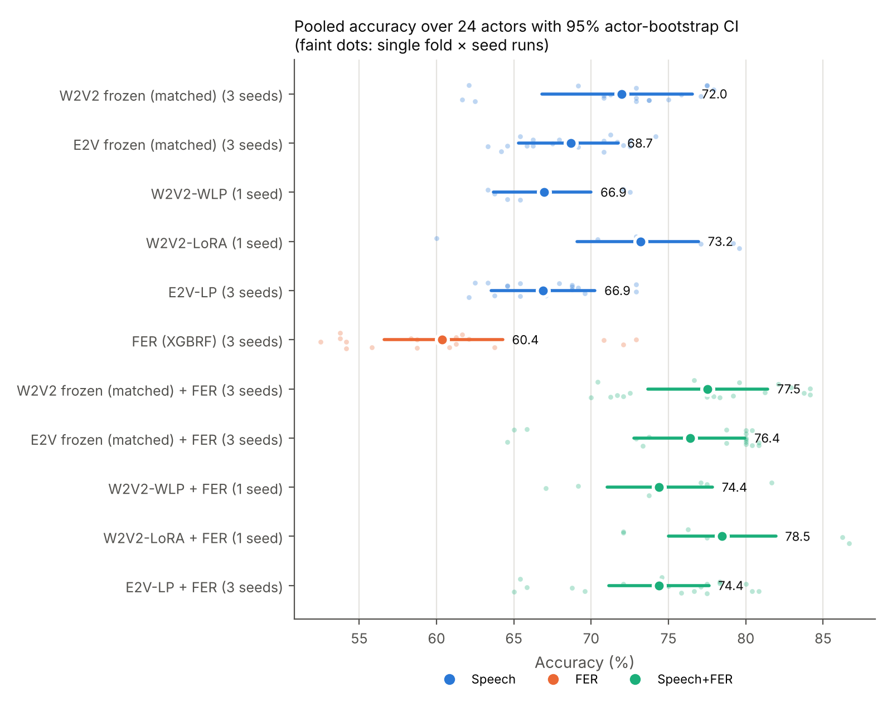
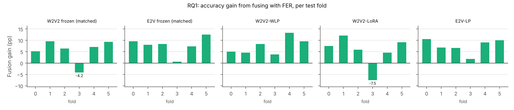
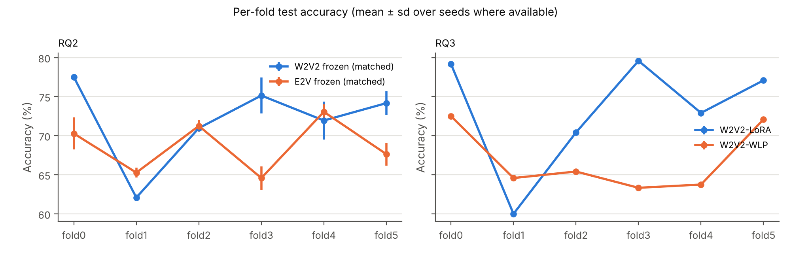
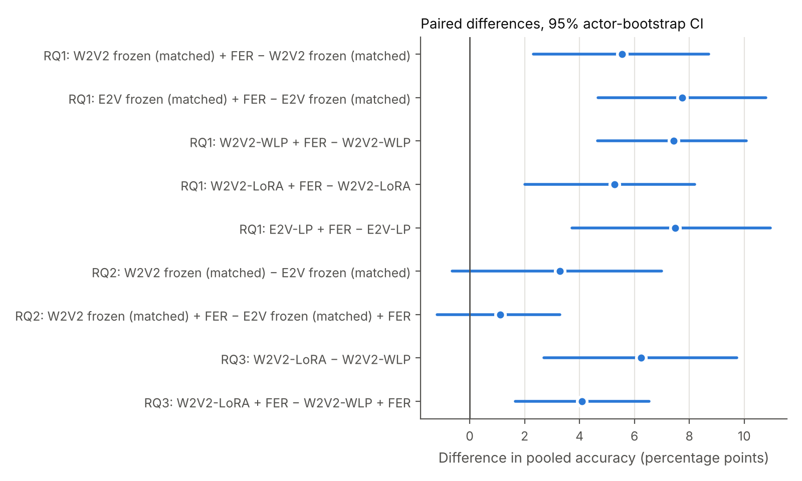
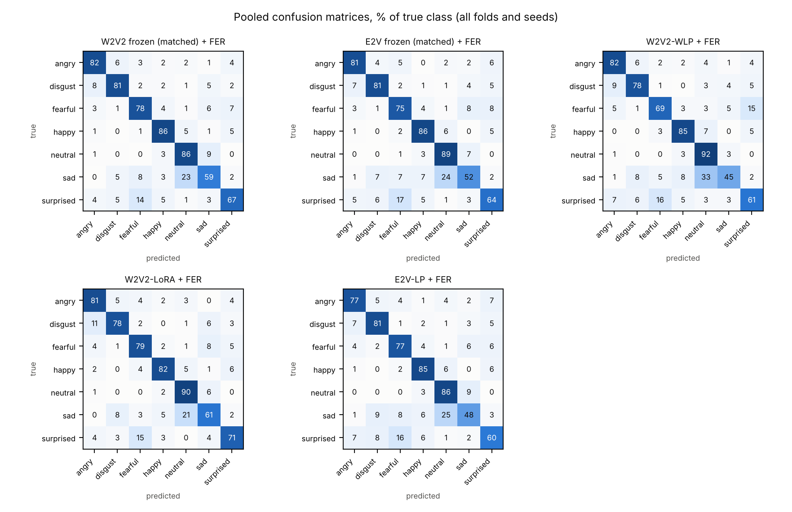

← Interactive overview · PDF · GitHub
Tharen Emmanuel Candi tharenemmanuel.candi@studenti.unipd.it
Speech Emotion Recognition (SER) is a critical component for many downstream applications, but it requires a deep understanding of intricate paralinguistic cues and pushes the limits of vocal acoustic variability. Consequently, SER remains a strong benchmark for evaluating speech foundation models (SFMs), as it tests the richness of their embedding spaces. It also serves as a candidate task for the application of multimodal models, as human emotion recognition is inherently multimodal.
Using the RAVDESS dataset as a benchmark, we evaluate temperature-calibrated late fusion of self-supervised speech encoders with a facial emotion recognition (FER) model built on MediaPipe blendshapes, and compare a general SFM (wav2vec 2.0) with an emotion-specialised SSL model (emotion2vec).
Every system is evaluated with 6-fold actor-wise cross-validation, so that every actor is tested exactly once by models that never saw them, with 95% confidence intervals from an actor-level bootstrap. The two speech encoders are compared both within their own pipelines and under a matched probe and training recipe.
This project addresses three research questions:
RAVDESS is a validated multimodal emotional dataset with controlled statements, multiple emotions, and explicit intensity levels, recorded from 24 professional actors [1]. Its strengths are recording quality and balanced class structure; its key limitation is that it remains acted and therefore only partially representative of natural conversational affect [1].
RAVDESS was selected for both scientific and practical reasons:
wav2vec 2.0 learns contextual speech representations through masked prediction over broad, general-purpose speech corpora (e.g. LibriSpeech, LibriVox-scale data) [2]. Its pretraining objective targets speech structure generally, thus SER performance depends on how well an adapted classifier head can recover affect-relevant structure that the encoder was never explicitly optimised to represent. We use the wav2vec2-base checkpoint, following Pepino et al.’s finding that base-scale embeddings give their strongest SER results [5]; the same work also finds that emotion cues are distributed across multiple transformer layers rather than concentrated at the top, which motivates the layer-weighted pooling used in Section 3.4.
In contrast, emotion2vec uses emotion-centered self-supervised
distillation on ~262h of emotional speech (IEMOCAP, MELD, MEAD,
CMU-MOSEI, MSP-Podcast) [3], making it task-aligned by construction. We
use the iic/emotion2vec_base checkpoint as a frozen
backbone, not the emotion2vec+ checkpoints, which are fine-tuned for
classification with a teacher that has seen RAVDESS.
LoRA offers a middle path for adapting the general-purpose encoder toward the task without the catastrophic forgetting and overfitting risked by full fine-tuning on small SER datasets [4].
Facial blendshape coefficients (52 MediaPipe expression channels) are used instead of raw video as video is computationally expensive and contains substantial variation that is not directly useful for FER (for example background, lighting, and appearance-specific detail). Blendshapes reduce the information to facial-action intensity directly relevant to expression [8].
As supported by the Mehrabian 7-38-55 rule, combining modalities helps disambiguate cases that are ambiguous in audio alone (e.g. laughter vs. scream, sad vs. neutral prosody) [10], which is evaluated in Section 4.2.
RAVDESS has 24 actors, so any single actor-disjoint split tests only a handful of speakers and its result depends on which speakers those are. Luna-Jiménez et al. [11] evaluated speech and facial-action-unit models on RAVDESS with subject-wise 5-fold cross-validation, but with no separate test set: the held-out actors of each fold served both for early stopping and for reporting, and seeds were not repeated. The protocol here keeps validation and test actors separate in every fold, so model selection never sees the reported actors, and repeats the cheaper systems over three seeds. Numbers from the two protocols are therefore not directly comparable; Appendix B runs the face model of this study on their exact folds.
The calm -> neutral merge is justified by the following factors:
However, the merge introduces a mild class imbalance (neutral has 1.5× the clips of every other class), so inverse-frequency class weights are used during training of the supervised audio and visual classifiers.
results_cv/folds.json.| Fold | Test actors | Validation actors |
|---|---|---|
| 0 | 1, 12, 15, 24 | 6, 10, 13, 19 |
| 1 | 6, 10, 13, 19 | 7, 16, 20, 23 |
| 2 | 7, 16, 20, 23 | 4, 5, 11, 18 |
| 3 | 4, 5, 11, 18 | 9, 14, 21, 22 |
| 4 | 9, 14, 21, 22 | 2, 3, 8, 17 |
| 5 | 2, 3, 8, 17 | 1, 12, 15, 24 |
Data loading follows the split protocol directly: training batches of 8 clips are shuffled with a seeded generator, validation and test batches are ordered. For late fusion the audio and blendshape outputs are matched by clip, and the clip indices and labels of both modalities are checked to be identical before fusion.
Three speech systems, each with its own head and a fixed training recipe (Section 3.8):
| Model | Backbone | Adaptation strategy |
|---|---|---|
| wav2vec2 weighted-layer linear probe (W2V2-WLP) | wav2vec2-base | Backbone frozen; all 13 hidden states are softmax-weighted, then passed through Linear(768 -> 128) + ReLU + Dropout(0.25), mean-pooled over time, and classified with Linear(128 -> 7) [5] |
| LoRA-adapted wav2vec 2.0 (W2V2-LoRA) | wav2vec2-base | LoRA adapters on q_proj and v_proj with r
= 4, alpha = 4, dropout 0.25, bias disabled; the same softmax-weighted
13-layer pooling, followed by a sigmoid feature gate, LayerNorm(768) and
Linear(768 -> 7) [4] |
| emotion2vec linear probe (E2V-LP) | iic/emotion2vec_base | Backbone frozen; final-layer output mean-pooled -> Linear(768 -> 128) + ReLU + Dropout(0.20) + Linear(128 -> 7) |
The LoRA hyperparameters follow Lashkarashvili et al. [4] and were fixed a priori, not tuned: r = 4 gives each adapted projection four update directions, which acts as a regulariser on the small training set, and alpha = 4 keeps the effective scaling at 1.0. The LoRA head differs from the frozen probe’s head, so W2V2-LoRA vs W2V2-WLP compares two pipelines rather than isolating the effect of adaptation.
The W2V2-WLP backbone is frozen but kept in train mode, so its dropout, LayerDrop and SpecAugment stay active during training. The E2V-LP backbone runs in eval mode with no padding mask; its final-layer output, averaged over all frames of the padded input, is deterministic and is therefore computed once and cached.
For both wav2vec 2.0 systems, SpecAugment was injected through the
backbone configuration with mask_time_prob = 0.05,
mask_time_length = 15,
mask_feature_prob = 0.05, and
mask_feature_length = 12. Time masking is kept small to
avoid removing short prosodic cues that could be important for emotion
discrimination.
The pipeline systems differ in more than the encoder: the wav2vec 2.0 probe reads all 13 hidden states while the emotion2vec probe reads only the last layer, the heads are arranged differently, the training recipes differ, and the wav2vec 2.0 backbone runs in train mode while emotion2vec runs in eval mode. To compare the encoders fairly, both are frozen and trained with an identical probe and recipe:
Because the frozen backbones are deterministic in eval mode, their pooled hidden states are computed once per clip and cached.
Table 1 lists the trainable parameters. The two matched probes have identical sizes (99,348), within 13 parameters of E2V-LP.
Table 1. Trainable and frozen parameters.
| System | Layer weights | Gate | LoRA | Head | Trainable | Frozen backbone |
|---|---|---|---|---|---|---|
| W2V2 frozen, matched probe | 13 | 0 | 0 | 99,335 | 99,348 | 94,370,944 |
| E2V frozen, matched probe | 13 | 0 | 0 | 99,335 | 99,348 | 93,790,988 |
| W2V2-WLP | 13 | 0 | 0 | 99,335 | 99,348 | 94,371,712 |
| W2V2-LoRA | 13 | 768 | 147,456 | 6,919 | 155,156 | 94,371,712 |
| E2V-LP | 0 | 0 | 0 | 99,335 | 99,335 | 93,790,988 |
LoRA was not evaluated under the matched protocol. Matching it would remove SpecAugment, which cannot be matched across the two backbones and which the LoRA recipe relies on against overfitting; a matched LoRA variant without SpecAugment was started, then discarded, and is not reported. The backbone comparison (RQ2) therefore uses frozen encoders only.
_neutral score; tongueOut is
zero-filled when absent.We use utterance-level blendshape summary features because visual sequence/deep baselines with neural architectures (LSTM, GRU, 1D-CNN, MLP) tended to overfit in early investigations.
For each utterance, the audio and visual logits are temperature-calibrated, converted to probabilities and summed:
where and are the class-logit vectors from the audio and visual branches (pre-softmax XGBoost margins for the visual branch), and are temperatures fitted on the validation actors of the same fold by minimising cross-entropy. The temperatures are parametrised as and fitted with L-BFGS and a strong-Wolfe line search, which keeps them positive. (Optimising directly with a fixed step can diverge to negative temperatures, which would invert the probabilities.) The fitted temperatures range from 0.30 to 1.73.
Hybrid feature-level fusion was not used because it would likely overfit on the available data and is less practical with a tree-based FER branch (XGBoostRF). We therefore use temperature-calibrated probability summation, which is simple, transparent, and reduces magnitude-driven modality dominance [9].
The experiments ran on Google Colab (NVIDIA L4 and A100 GPUs) with
automatic mixed precision. Each run’s test logits, predictions,
validation loss, epochs, trainable parameters and wall time are saved as
it finishes, so interrupted sessions resume without retraining; the
analysis reads only these saved outputs. Hidden states are recorded per
encoder layer, so a LayerDrop-skipped layer repeats the previous state
and every probe sees 13 states regardless of the transformers version.
Code, fold assignment and all results are in the repository
(cv/,
notebook/ser_fer_fusion_ravdess_cv.ipynb,
results_cv/). The extracted blendshapes (2880 CSV files,
one per RAVDESS speech video) are available at
https://drive.google.com/drive/folders/1omlBivvIL68xhqAdRY5lSjJNIO8DaIN7
(CC BY-NC-SA 4.0, as RAVDESS).
Pipeline recipes (fixed in advance, not tuned): both wav2vec 2.0 systems use learning rate 1e-3, weight decay 1e-2, dropout 0.25, at most 25 epochs and patience 5; the emotion2vec probe uses learning rate 1e-3, weight decay 1e-4, dropout 0.20, at most 50 epochs and patience 10. All use class-weighted cross-entropy, AdamW and a cosine schedule, with early stopping on validation loss and restoration of the best checkpoint. One pipeline run took about 7.5 min (frozen wav2vec 2.0) and 5 min (LoRA) on an L4; a cached-feature probe takes seconds.
Abbreviations: W2V2 = wav2vec 2.0, E2V = emotion2vec, WLP = weighted-layer probe, LP = linear probe, FER = blendshape + XGBoost-RF face model. “Matched” refers to the protocol of Section 3.4.2.
Table 2. Accuracy and macro-F1 over the 6 folds. Mean ± sd is over fold × seed runs (fold variation only for single-seed systems). Pooled = all 24 actors, mean over the system’s seeds, with 95% actor-bootstrap CI. All values in %.
| System | Seeds | Acc. mean ± sd | Macro-F1 mean ± sd | Pooled acc. [95% CI] | Pooled macro-F1 [95% CI] |
|---|---|---|---|---|---|
| W2V2 frozen, matched probe | 3 | 72.0 ± 5.2 | 71.5 ± 4.7 | 72.0 [66.8, 76.6] | 71.6 [67.0, 76.0] |
| E2V frozen, matched probe | 3 | 68.7 ± 3.4 | 67.1 ± 3.7 | 68.7 [65.3, 71.7] | 67.5 [64.3, 70.4] |
| W2V2-WLP | 1 | 66.9 ± 4.2 | 64.6 ± 5.1 | 66.9 [63.7, 70.0] | 64.9 [61.4, 68.1] |
| W2V2-LoRA | 1 | 73.2 ± 7.4 | 72.6 ± 7.0 | 73.2 [69.1, 76.9] | 72.7 [68.9, 76.4] |
| E2V-LP | 3 | 66.9 ± 3.2 | 65.1 ± 4.0 | 66.9 [63.5, 70.3] | 65.5 [62.4, 68.6] |
| FER | 3 | 60.4 ± 6.3 | 58.5 ± 6.7 | 60.4 [56.6, 64.3] | 58.9 [54.5, 63.0] |
| W2V2 matched + FER | 3 | 77.5 ± 5.1 | 76.8 ± 5.5 | 77.5 [73.7, 81.4] | 76.9 [72.9, 81.0] |
| E2V matched + FER | 3 | 76.4 ± 5.8 | 75.0 ± 6.7 | 76.4 [72.8, 80.0] | 75.4 [71.5, 79.2] |
| W2V2-WLP + FER | 1 | 74.4 ± 5.5 | 72.9 ± 6.3 | 74.4 [71.0, 77.8] | 73.0 [69.2, 76.9] |
| W2V2-LoRA + FER | 1 | 78.5 ± 6.6 | 77.6 ± 6.7 | 78.5 [75.0, 81.9] | 77.8 [74.2, 81.4] |
| E2V-LP + FER | 3 | 74.4 ± 5.3 | 73.1 ± 5.9 | 74.4 [71.1, 77.6] | 73.3 [69.7, 76.7] |
For the three-seed systems, the pooled accuracy varies by less than 1 point between seeds (sd 0.3–0.8 points speech-only, 0.3–0.6 points fused); the spread across folds, i.e. across test actors, is several times larger.

Table 3. Fusion gain (fused − speech only) on the same clips, pooled and per test fold (mean over seeds where available), in percentage points.
| Speech system | Seeds | Speech | Fused | Gain [95% CI] | p (Holm) | F0 | F1 | F2 | F3 | F4 | F5 | Folds > 0 |
|---|---|---|---|---|---|---|---|---|---|---|---|---|
| W2V2 matched | 42–44 | 72.0 | 77.5 | +5.6 [+2.3, +8.7] | 0.001 | +5.1 | +9.6 | +6.4 | −4.2 | +7.1 | +9.3 | 5/6 |
| E2V matched | 42–44 | 68.7 | 76.4 | +7.7 [+4.7, +10.8] | <0.001 | +9.6 | +8.1 | +8.3 | +0.6 | +7.4 | +12.5 | 6/6 |
| W2V2-WLP | 42 | 66.9 | 74.4 | +7.4 [+4.7, +10.1] | <0.001 | +5.0 | +4.6 | +8.3 | +3.8 | +13.3 | +9.6 | 6/6 |
| W2V2-LoRA | 42 | 73.2 | 78.5 | +5.3 [+2.0, +8.2] | 0.003 | +7.5 | +12.1 | +5.8 | −7.5 | +4.6 | +9.2 | 5/6 |
| E2V-LP | 42–44 | 66.9 | 74.4 | +7.5 [+3.7, +10.9] | <0.001 | +10.6 | +6.8 | +6.7 | +1.8 | +9.0 | +10.0 | 6/6 |
Fusion improves pooled accuracy for every speech system, by 5.3 to 7.7 points, and every 95% CI excludes zero. The gain is positive in every test fold for three of the five systems (both emotion2vec probes and W2V2-WLP); for E2V-LP it is positive in all 18 fold × seed runs. The exception is fold 3 (test actors 4, 5, 11, 18), where the face model is at its weakest (53.5% accuracy) while the two wav2vec 2.0 systems are among their best folds (75.1% and 79.6%): there fusion costs the matched wav2vec 2.0 probe 4.2 points and the LoRA model 7.5 points. Every fused system is also far above the face model alone (+13.7 to +17.8 points, every CI excluding zero, and better in every fold and every fold × seed run).

The modalities remain complementary at the class level (Table 6): the face model recognises happy (83% recall) far better than any speech model (41–57%), while speech is much better on surprised (69–80% vs 32%) and fearful (61–79% vs 52%). Fusion lifts happy recall to 82–86% for every speech system; surprised loses 8–14 points against speech alone because the face model often mislabels it.
Table 4. Paired comparison under the matched protocol (wav2vec 2.0 − emotion2vec), three seeds, 6 folds.
| Comparison | Δ accuracy [95% CI] | p (Holm) | Δ macro-F1 [95% CI] | Folds W2V2 better | Wilcoxon p (r) |
|---|---|---|---|---|---|
| Speech only | +3.3 [−0.6, +7.0] | 0.201 | +4.1 [+0.3, +7.9] | 3/6 | 0.438 (+0.43) |
| Fused with FER | +1.1 [−1.2, +3.3] | 0.331 | +1.5 [−0.7, +3.7] | 3/6 | 0.438 (+0.43) |
With the same probe, recipe and search budget, frozen wav2vec 2.0 scores 3.3 points higher than frozen emotion2vec, but the difference is not reliable: the actor-bootstrap CI includes zero and wav2vec 2.0 wins in only three of six folds (per-fold differences +7.2, −3.2, −0.3, +10.6, −1.1, +6.5). Macro-F1 points the same way, and its CI just excludes zero (+0.3 to +7.9); we treat accuracy as the primary metric. After fusion the gap shrinks to 1.1 points. Validation selected the same learning rate (1e-3) for both backbones in every fold and seed. The matched probe also helps wav2vec 2.0 relative to the W2V2-WLP pipeline (+4.7 points, seed 42), whereas for emotion2vec reading all 13 layers adds only +1.8 points over the final-layer probe (CI includes zero; Appendix A).

Table 5. LoRA pipeline − frozen weighted-layer probe pipeline, each with its own recipe and SpecAugment, seed 42, 6 folds.
| Comparison | Δ accuracy [95% CI] | p (Holm) | Δ macro-F1 [95% CI] | Folds LoRA better | Wilcoxon p (r) |
|---|---|---|---|---|---|
| Speech only | +6.2 [+2.7, +9.7] | <0.001 | +7.9 [+4.1, +11.7] | 5/6 | 0.062 (+0.90) |
| Fused with FER | +4.1 [+1.7, +6.5] | <0.001 | +4.8 [+2.1, +7.5] | 6/6 | 0.031 (+1.00) |
The LoRA pipeline is reliably better than the frozen weighted-layer probe, both alone (+6.2 points, better in five of six folds) and fused (+4.1 points, better in every fold). Since the two pipelines differ in their heads as well as in adaptation, and LoRA was run with one seed, this supports “the LoRA pipeline outperforms the frozen-probe pipeline” rather than a clean effect of adaptation alone.

Table 6. Recall per class, pooled over all folds and each system’s seeds (%).
| Class | W2V2 matched | E2V matched | W2V2-WLP | W2V2-LoRA | E2V-LP | FER | W2V2 m. + FER | E2V m. + FER | WLP + FER | LoRA + FER | E2V-LP + FER |
|---|---|---|---|---|---|---|---|---|---|---|---|
| angry | 79 | 76 | 80 | 79 | 72 | 74 | 82 | 81 | 82 | 81 | 77 |
| disgust | 78 | 73 | 68 | 72 | 74 | 64 | 81 | 81 | 78 | 78 | 81 |
| fearful | 79 | 74 | 61 | 78 | 76 | 52 | 78 | 75 | 69 | 79 | 77 |
| happy | 56 | 44 | 43 | 57 | 41 | 83 | 86 | 86 | 85 | 82 | 85 |
| neutral | 76 | 82 | 90 | 82 | 81 | 70 | 86 | 89 | 92 | 90 | 86 |
| sad | 59 | 53 | 40 | 61 | 48 | 41 | 59 | 52 | 45 | 61 | 48 |
| surprised | 77 | 72 | 75 | 80 | 69 | 32 | 67 | 64 | 61 | 71 | 60 |
Sad remains the hardest class for every system (40–61% recall) and
fusion does not help it, since the face model is also weak on sad (41%).
Pooled confusion matrices are in results_cv/
(fig_confusion_speech.png,
fig_confusion_fer.png,
fig_confusion_fused.png).

Table 7. Accuracy by emotional intensity (%), pooled per seed and averaged over seeds; ± is the sd over fold × seed runs.
| System | Normal | Strong |
|---|---|---|
| W2V2 matched | 67.4 ± 5.7 | 77.1 ± 5.3 |
| W2V2 matched + FER | 74.7 ± 4.7 | 80.8 ± 5.6 |
| E2V matched | 64.4 ± 3.0 | 73.6 ± 5.5 |
| E2V matched + FER | 74.2 ± 4.6 | 78.9 ± 7.4 |
| W2V2-WLP | 62.6 ± 4.0 | 71.9 ± 5.0 |
| W2V2-WLP + FER | 71.4 ± 5.5 | 77.8 ± 6.0 |
| W2V2-LoRA | 68.1 ± 9.1 | 79.0 ± 6.7 |
| W2V2-LoRA + FER | 75.8 ± 4.3 | 81.5 ± 9.3 |
| E2V-LP | 63.2 ± 3.3 | 71.1 ± 5.3 |
| E2V-LP + FER | 71.0 ± 4.0 | 78.3 ± 7.3 |
| FER | 58.9 ± 6.2 | 62.1 ± 7.4 |
Every speech model is 8–11 points more accurate on strong than on normal-intensity clips, while the face model is nearly intensity-independent (58.9% vs 62.1%). Fusion therefore helps most on the subtle, normal-intensity clips (+7.3 to +9.8 points) and less on strong ones (+2.5 to +7.2 points).
Fusion (RQ1). Adding the face model improves every speech system across actors, by +5.3 to +7.7 points with confidence intervals that exclude zero, and the gain comes from complementary errors (the face model is strong on happy and weak on surprised and fearful, the reverse of speech). Fusion also depends on the face model being competitive on the test actors: in fold 3, where FER is weakest and wav2vec 2.0 does well, fusion with equal weights lowers the two wav2vec 2.0 systems’ accuracy.
Backbones (RQ2). Compared as their own pipelines, E2V-LP is level with W2V2-WLP and 5.7 points behind W2V2-LoRA (Appendix A), but those comparisons mix the encoder with the probe, the recipe and the backbone mode. Under a matched probe and recipe, frozen wav2vec 2.0 is ahead by 3.3 points, but the difference is within the uncertainty from 24 actors and the per-fold results split three to three. On RAVDESS, we cannot distinguish the two frozen encoders; emotion-specific pretraining shows no advantage, and no clear disadvantage either.
LoRA (RQ3). The LoRA pipeline is reliably better than the frozen weighted-layer probe pipeline, by 6.2 points alone and 4.1 points after fusion. Because the two differ in their heads and LoRA has one seed, this is evidence for the pipeline as a whole rather than for adaptation in isolation.
Face model against published work. On the exact actor folds and 8 classes of Luna-Jiménez et al. [11], the blendshape forest reaches 57.9%, about 4 points below their AU + bi-LSTM model (62.13%) and 2 points below their static MLP (60.22%), without using held-out actors for model selection (Appendix B). The face model is therefore in the range of published face-only results, not an unusually weak or strong branch.
Best system. LoRA wav2vec 2.0 + FER is the most accurate system (78.5%), but not reliably better than the matched frozen wav2vec 2.0 probe + FER (difference +0.4 points on seed 42, CI −1.5 to +2.4); the matched frozen probe reaches almost the same accuracy with a third fewer trainable parameters and no backbone in the training loop.
This study presents a cross-validated multimodal SER evaluation on RAVDESS with unified labels, speaker-disjoint folds, separate validation and test actors, and actor-level confidence intervals. The three research questions are answered as follows.
The best system, LoRA wav2vec 2.0 + FER, reaches 78.5% (95% CI 75.0–81.9) over all 24 actors.
Future work could evaluate:
| A | B | Seeds | Δ accuracy [95% CI] | p (Holm) |
|---|---|---|---|---|
| W2V2-WLP | E2V-LP | 42 | −0.6 [−4.0, +2.8] | 0.778 |
| W2V2-LoRA | E2V-LP | 42 | +5.7 [+1.4, +9.8] | 0.046 |
| W2V2 matched probe | W2V2-WLP | 42 | +4.7 [+1.0, +8.3] | 0.046 |
| E2V matched probe | E2V-LP | 42–44 | +1.8 [−0.3, +3.9] | 0.201 |
The face model alone (same features and XGBRF settings, seeds 42–44) was re-run with 8 classes (calm kept apart from neutral) and with 7, on the 6 folds of this study and on the 5 actor folds of Luna-Jiménez et al. [11]: held-out actors (2, 5, 14, 15, 16), (3, 6, 7, 13, 18), (10, 11, 12, 19, 20), (8, 17, 21, 23, 24), (1, 4, 9, 22). Each fold trains on all remaining actors; XGBRF has fixed hyperparameters and no early stopping, so no validation actors are needed and the held-out actors are used only for testing. Fold mean is the mean of per-fold accuracies (their aggregation) ± sd across folds; pooled is over all 1440 clips with a 95% actor-bootstrap CI; both are averaged over seeds.
| Protocol | Classes | Fold-mean acc. ± sd | Pooled acc. [95% CI] | Pooled macro-F1 [95% CI] |
|---|---|---|---|---|
| Luna-Jiménez et al. 5 folds | 8 | 57.9 ± 3.4 | 58.1 [53.9, 62.6] | 57.6 [52.9, 62.4] |
| Luna-Jiménez et al. 5 folds | 7 | 59.2 ± 2.8 | 59.4 [55.8, 63.2] | 57.8 [53.7, 62.0] |
| 6-fold CV (this study), test actors only | 8 | 60.2 ± 5.9 | 60.2 [56.9, 63.4] | 59.0 [55.0, 62.6] |
| 6-fold CV (this study), test actors only | 7 | 61.4 ± 7.4 | 61.4 [57.5, 65.5] | 60.1 [55.8, 64.3] |
| Face-only, 8 classes, Luna-Jiménez et al. folds | Accuracy (fold mean) |
|---|---|
| Luna-Jiménez et al. [11]: OpenFace AUs + bi-LSTM | 62.13 |
| Luna-Jiménez et al. [11]: static MLP | 60.22 |
| This study: MediaPipe blendshape statistics + XGBRF (3 seeds) | 57.9 |
The comparison is indicative: the face features differ (MediaPipe blendshape statistics here, OpenFace action units in [11]), and no held-out actors were used for model selection in these runs, whereas in [11] they also served for early stopping (Section 2.4).
Calm and neutral are separable from the face to a moderate degree. On their folds, calm recall is 62.3% and neutral recall 57.3%; only 4.3% of calm clips are predicted as neutral and 7.3% of neutral clips as calm (6-fold CV: 67.2% and 50.3% recall, 4.5% and 7.6% confusion). Neutral is confused more with sad (21% of neutral clips) than with calm.
These runs train on 20 or 19 actors per fold instead of the 16 of the main protocol, which holds out 4 validation actors; this is why the 7-class 6-fold figure here (61.4%) differs from the 60.4% of Table 2.